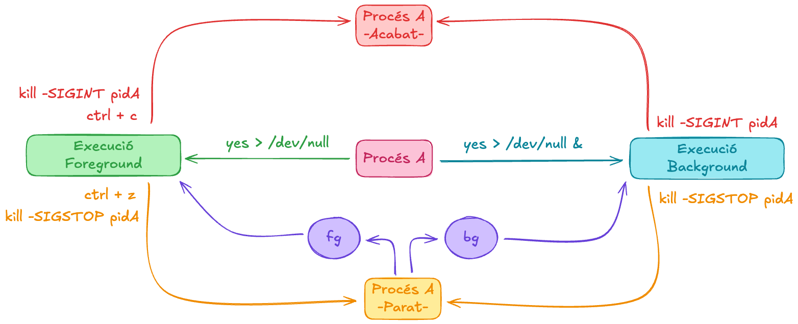
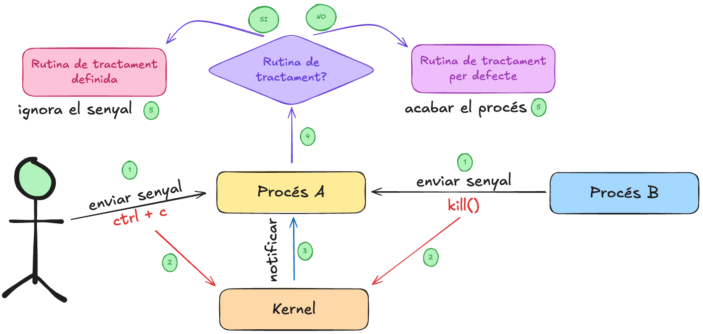

sequenceDiagram
participant K as Nucli
participant A as Procés A
A->>K: Excepció (divisió per zero)
K->>A: Envia senyal SIGFPE al procés A
A->>A: Té rutina de gestió de senyal?
alt Sí
A->>A: Executa rutina de gestió de senyal
else No
A->>K: Acció per defecte (finalitza procés)
end
Senyals
Unitat 3 · Sistemes Operatius (SO)
Jordi Mateo Fornés
Què són els senyals?
Un senyal és una notificació asíncrona enviada pel nucli a un procés per informar d’un esdeveniment (com una excepció o acció de l’usuari).
- El procés A s’executa en mode usuari.
- Es produeix una excepció (divisió per zero).
- El nucli detecta l’error i envia al procés un senyal SIGFPE.
- El procés pot tenir una rutina de tractament o seguir l’acció per defecte (acabar).
- El procés A es finalitza, degut al Gestor de senyals.
Flux dels esdeveniments
Tipus d’esdeveniments
Els esdeveniments que generen senyals poden provenir de maquinari o programari.
| Tipus | Origen | Gestió | Exemple | Destinació |
|---|---|---|---|---|
| Interrupció HW | Dispositiu extern | Gestor d’interrupcions | Tick del temporitzador | Nucli |
| Excepció SW | Instrucció errònia | Nucli → envia senyal | Divisió per zero → SIGFPE | Procés causant |
| Senyal | Usuari, procés o nucli | kill(), signal() |
kill(pid, SIGTERM) |
Procés destinatari |
Exemple pràctic
Quants senyals estem enviant? Quines? Quina acció fa el procés quan rep els senyals?
| Combinació | Senyal | Efecte per defecte | Estat |
|---|---|---|---|
| Ctrl+C | SIGINT | Terminar procés | Mort |
| Ctrl+Z | SIGTSTP | Aturar procés | Stopped |
| bg | SIGCONT | Reprendre en segon pla | Running |
| fg | SIGCONT | Reprendre en primer pla | Running |
- Quants senyals estem enviant? 3
- Quines? SIGTSTP, SIGINT, SIGCONT
- Quina acció fa el procés quan rep les senyals? Aturar l’execució en primer pla i portar el procés a segon pla. Arrancar l’execució en segon pla. Acabar el procés.
Exemple pràctic: Pas a Pas
La comanda yes>/dev/null crearà un procés A i s’executa al primer pla, quan un usuari pitjà el ctrl-z, el kernel automàticament envia un senyal SIGSTOP al procés A, que modifica el seu estat d’execució a parat i també marxa del primer pla al segon pla.
Després amb la comanda bg, el kernel tramet al procés el senyal SIGCONT i continua la seva execució en segon pla quan la rep. Una altra manera equivalent per realitzar aquest procés és yes>/dev/null & on & ens envia l’ordre directament en execució al background.
Observeu també com de forma similar la comanda fg; en aquest cas el kernel tramet SIGCONT i el procés quan rep SIGCONT; torna a executar-se al primer pla. Noteu que amb ctrl-c tenim un comportament similar; i el procés en primer pla és acabat en rebre el senyal SIGINT (ctrl+c).
Diagrama de canvis d’estat

Esdeveniments síncrons i asíncrons
| Tipus d’esdeveniment | Exemple | Sincronia |
|---|---|---|
| Excepció (SIGFPE) | Divisió per zero | Síncron amb l’execució |
| Senyal extern (SIGINT) | Ctrl+C | Asíncron (pot arribar en qualsevol moment) |
Un esdeveniment és síncron quan està relacionat amb l’execució del procés, per exemple una excepció com la divisió per zero o un error de segmentació. En aquest cas el procés que ha causat l’esdeveniment és el mateix que rep el senyal.
Un esdeveniment és asíncron quan no està relacionat amb l’execució del procés, per exemple una interrupció de maquinari o una acció de l’usuari com un ctrl+c. En aquest cas el procés que ha causat l’esdeveniment és diferent del procés que rep el senyal.
Esquema general

Rutines de Tractament de senyals
Quan el procés rebi el senyal signum executarà gestor, que pot ser una funció o SIG_DFL, acció per defecte, o SIG_IGN per ignorar el senyal.
Valors de retorn
- En cas d’èxit retorna un punter a la anterior funció gestora del senyal.
- En cas d’error, retorna SIG_ERR.
pause()
La crida a sistema pause() s’utilitza per posar en espera un procés fins que rep un senyal.
- Sempré retorna -1.
- Es bloqueja fins que el procés rep un senyal (qualsevol).
Gestió interna de senyals (Kernel)
sequenceDiagram
participant U as CPU · Mode Usuari
participant K as Nucli
participant P as PCB del Procés
U->>K: Interrupció / Excepció / Syscall
K->>P: Marca senyal SIGINT com a pendent · signal_pending |= SIGINT
K->>P: Actualitza cua de senyals i màscara
K->>U: Retorna del mode nucli → mode usuari
U->>P: Comprova senyals pendents · signal_pending & ~signal_mask
alt Senyal amb handler
U->>P: Executa rutina del senyal user handler
else Acció per defecte
U->>K: Finalitza procés (SIG_DFL)
end
Crides a sistema
| Crida | Funció | Acció sobre el PCB |
|---|---|---|
sigprocmask(int how, const sigset_t *set, sigset_t *oldset) |
Bloqueja o desbloqueja senyals. | Modifica signal_mask. |
sigpending(sigset_t *set) |
Consulta els senyals pendents. | Llegeix signal_pending. |
sigaction(int signum, const struct sigaction *act, struct sigaction *oldact) |
Defineix un manejador per un senyal concret. | Modifica handlers[]. |
sigqueue(pid_t pid, int sig, const union sigval value) |
Envia un senyal amb una dada associada. | Afegeix entrada a queue. |
alarm(unsigned int sec) |
Programa l’enviament de SIGALRM. |
Configura alarm_timer. |
Gestió de senyals en C
Aquesta és la sintaxis tradicional per incloure la gestió de senyals en C.
sigaction
Aquesta és més moderna i segura.
Accions per defecte
Cada senyal té una acció per defecte. Algunes possibles accions són:
- Ignorar el senyal (SIG_IGN).
- Finalitzar el procés (abnormal termination).
- Finalitzar el procés i generar un core dump (abnormal termination with core dump).
- Aturar el procés (aturar el procés).
- Reprendre el procés (continuar el procés).
Senyals que no es poden capturar
Els senyals SIGKILL i SIGSTOP no poden ser capturats ni ignorats. Per tant, no podreu modificar el comportament per defecte per raons òbvies de seguretat. Això garanteix que el nucli i l’usuari sempre puguin aturar o matar un procés mal comportat.
- SIGKILL: Finalitza el procés immediatament.
kill -SIGKILL pid - SIGSTOP: Atura el procés immediatament.
kill -SIGSTOP pid
Enviament de senyals
Per enviar senyals a altres processos s’utilitza la crida a sistema kill().
Envia el senyal sig al/s procés/ssos segons pid:
- pid > 0 : S’envia al procés receptor.
- pid = 0 : S’envia als processos del mateix grup que l’emissor.
- pid = -1 : S’envia a tots els processos als quals el procés té permís per enviar senyals.
- pid < -1 : S’envia a tots els processos l’id del grup que coincideixi amb el valor absolut de pid.
Valors de retorn
- En cas d’èxit, s’ha enviat com a mínim un senyal, es retorna zero.
- En cas d’error, retorna SIG_ERR
Cas pràctic: Problema típic
- Si el procés s’executa sense interrupcions, el fitxer temporal temp.txt es crea, s’escriu “Hola”, es tanca i s’elimina correctament.
- Si el procés rep un SIGINT (Ctrl+C) abans de tancar el fitxer, el fitxer temporal temp.txt no es tancarà correctament o no s’eliminarà. Això pot provocar pèrdua de dades o corrupció del fitxer.
Solució amb gestió de senyals
Cas pràctic: Error típic
Les rutines de senyals s’executen de forma asíncrona: únicament han de fer operacions async-signal-safe, és a dir, mai es poden cridar funcions com malloc(), printf(), etc.
Una funció és async-signal-safe si no provoca comportament indefinit o corrupció de memòria.Només es poden cridar funcions que no depenguin de recursos globals compartits que puguin estar en un estat inconsistent. En aquest cas, malloc() i free() no són segures perquè poden modificar l’estat intern del gestor de memòria, acabant en corrupció de memòria heap.
Taula resum de senyals
| Senyal | ID | Descripció | Acció per defecte |
|---|---|---|---|
| SIGABRT | 6 | Abort | Terminació |
| SIGALRM | 14 | Temporitzador | Terminació |
| SIGCONT | 25 | Reprendre | Continuar |
| SIGFPE | 8 | Error aritmètic | Terminació |
| SIGKILL | 9 | Finalització forçada | No capturable |
| SIGINT | 2 | Interrupció usuari (Ctrl+C) | Terminació |
| SIGUSR1 | 16 | Senyal definit per l’usuari | Terminació |
Timers al nucli
El nucli manté un repositor de timers (estructures internes, sovint per PCB o grup de processos) que compta el temps restant per a cada procés o alarm.
sequenceDiagram
participant Kernel
participant Procés
Kernel->>Kernel: Compta temps timers
alt Timer expira
Kernel->>Procés: Envia SIGALRM
end
Quan expira un timer, el nucli genera un senyal SIGALRM i el posa a la cua de senyals del procés destinatari.
Alarm() i PCB (Process Control Block)
Quan un procés crida alarm(sec), el kernel:
- Guarda el temps restant al PCB del procés (
pcb->alarm_timer). - Programa el timer al scheduler o al timer interrupt handler.
- Quan el temps expira, el kernel envia SIGALRM al procés.
alarm() a userspace
El procés s’envia a si mateix després de sec segons un senyal SIGALRM. Retorna el nombre de segons pendents si hi havia una crida a alarm anterior, o zero en altre cas.
Desactivar alarmes
Per desactivar una alarma pendent, es pot cridar a alarm(0), aquesta comanda cancel·la qualsevol alarma pendent.
Resum

Això és tot per avui
TAKE HOME MESSAGE
- Els senyals són una eina de notificació entre el nucli i els processos.
- Els senyals poden ser enviats per l’usuari, per altres processos o pel mateix procés.
- Els senyals poden ser gestionats pel procés o executar l’acció per defecte.
- Els senyals es poden enviar amb la crida a sistema kill().
- Els processos poden definir rutines de tractament de senyals amb la crida a sistema signal().
- Els processos poden esperar senyals amb la crida a sistema


Unitat 3 · Sistemes Operatius (SO) 🏠